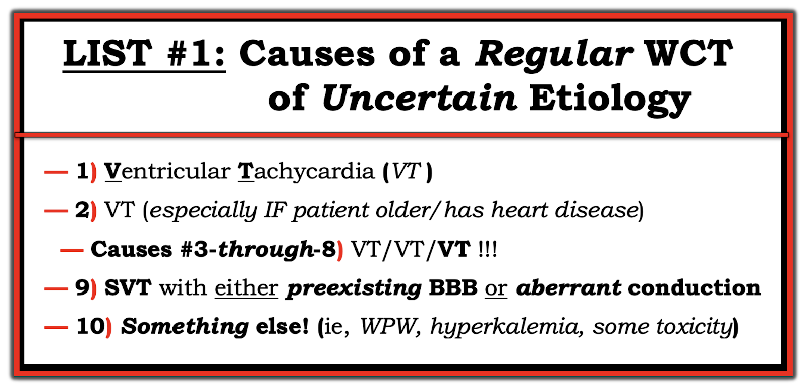

ECG Blog #283 — VT hay SVT dẫn truyền lệch hướng?
Điện tâm đồ ở Hình-1 được gửi đến tôi kèm câu hỏi sau: VT hay SVT dẫn truyền lệch hướng (aberrancy)?
- Bạn sẽ trả lời thế nào?
- Bạn chắc chắn đến mức nào về câu trả lời của mình?
SUY NGHĨ CỦA TÔI về điện tâm đồ ở Hình-1:
Ấn tượng ban đầu của tôi về điện tâm đồ ở Hình-1 (hình thành trong 2-3 giây đầu tiên khi nhìn bản ghi này) — là nhịp rất nhanh, và QRS rõ ràng là rộng.
- Về lâm sàng — Ưu tiên số 1 khi đánh giá bệnh nhân này là xác định tình trạng huyết động. Lý do là NẾU bệnh nhân này không ổn định huyết động với điện tâm đồ này — thì bất kể nhịp là gì — sốc điện chuyển nhịp đồng bộ (synchronized cardioversion) được chỉ định ngay lập tức!
Để ôn lại cách tiếp cận chẩn đoán của tôi khi đọc nhịp — Hãy giả định rằng bệnh nhân đang ổn định huyết động (hemodynamically stable). Quá trình suy nghĩ của tôi khi đánh giá nhịp này (dùng cách tiếp cận Ps, Qs, 3R) — như sau:
- Nhịp ở Hình-1 nhanh và đều (Regular).
- Theo phương pháp Cách-Một-Nhát (Xem ECG Blog #210) — tần số thất (Rate) của nhịp là ~180-190/phút (tức là, Khoảng R-R giữa các nhát cách một nhát [các số màu XANH ở chuyển đạo I của Hình-2] chỉ hơn 3 ô lớn một chút [các số màu ĐỎ] — do đó Một nửa tần số = 300 ÷ 3.2 ~90-95/phút X 2 ~180-190/phút là tần số tim ước tính).
- Không có sóng P xoang (vì không có sóng P dẫn truyền dương rõ ràng ở chuyển đạo II).
- QRS rõ ràng là Rộng (tức là, Nhìn vào những chuyển đạo mà QRS trông rộng nhất — không còn nghi ngờ gì rằng thời gian QRS ở các chuyển đạo như aVR và V1 ít nhất cũng dài hơn 3 ô nhỏ = hơn 0.12 giây).
Tổng hợp lại:
Đánh giá 4 thông số đầu tiên trong cách tiếp cận Ps, Qs, 3R cho thấy bệnh nhân ổn định huyết động này đang có WCT đều ( = nhịp nhanh QRS rộng (Wide-Complex Tachycardia)) với tần số ~180-190/phút, không có dấu hiệu rõ ràng của sóng P xoang.
- Như đã nhấn mạnh trong tài liệu bổ sung ở PHẦN BỔ SUNG bên dưới — chẩn đoán phân biệt của một nhịp WCT đều chưa rõ căn nguyên nên được mặc định là VT (nhịp nhanh thất (Ventricular Tachycardia)) — cho đến khi chứng minh được điều ngược lại. Lý do là về mặt thống kê — ít nhất 80-90% trong số tất cả những nhịp như vậy rốt cuộc sẽ là VT ngay cả trước khi bạn phân tích các dấu hiệu cụ thể trên điện tâm đồ.
- ĐIỂM THEN CHỐT (PEARL) #1: Vì khả năng thống kê cao như vậy rằng một nhịp WCT đều không có sóng P xoang rốt cuộc sẽ là VT — "Tư duy" của chúng ta nên là chúng ta cần chứng minh rằng nhịp này không phải là VT, chứ không phải ngược lại. Điểm MẤU CHỐT này thường bị quá nhiều nhân viên y tế cấp cứu quên mất.
- Như gợi ý ở Hình-4 (bên dưới trong Phần bổ sung) — 10-20% còn lại của các nhịp WCT đều sẽ được chia thành: i) Một nhịp SVT (nhịp nhanh trên thất (SupraVentricular Tachycardia)) kèm blốc nhánh (BBB) có sẵn từ trước hoặc dẫn truyền lệch hướng, là nguyên nhân làm QRS rộng; hoặc, ii) Một thứ gì đó khác! (tức là, WPW, tăng kali máu, và/hoặc một dạng ngộ độc nào đó).
Sử dụng Trục và Hình dạng QRS:
Chúng ta thường có thể tăng mức độ chắc chắn về căn nguyên của một nhịp WCT đều bằng cách chú ý đến: i) Trục mặt phẳng trán (frontal plane axis) trong cơn nhịp nhanh; và, ii) Đánh giá hình dạng QRS (Xem Hình-5 và Hình-6 bên dưới trong Phần bổ sung):
- ĐIỂM THEN CHỐT (PEARL) #2: Đánh giá Trục mặt phẳng trán trong một nhịp WCT đều là việc DỄ làm và, có thể mang tính chẩn đoán. NẾU có lệch trục "cực độ" (xác định khi thấy QRS hoàn toàn âm ở hoặc chuyển đạo I hoặc chuyển đạo aVF) — điều này gợi ý mạnh rằng nhịp là VT.
- Chú ý ở Hình-2 — rằng phức bộ QRS âm hoàn toàn ở mỗi chuyển đạo trong 3 chuyển đạo dưới trong cơn nhịp nhanh. Mức độ trục lệch cực độ này làm tăng khả năng thống kê là VT lên hơn 90%!
- Xin nhấn mạnh — Sẽ không tính nếu bạn chỉ có trục lệch trái hoặc lệch phải nhiều (tức là, có một sóng r nhỏ ban đầu ở chuyển đạo aVF hoặc chuyển đạo I). Tiêu chuẩn Trục nói trên chỉ có ích cho chẩn đoán NẾU có lệch Trục "cực độ" (được định nghĩa là QRS âm hoàn toàn ở hoặc chuyển đạo I hoặc chuyển đạo aVF).
- ĐIỂM THEN CHỐT (PEARL) #3: Nhìn chung — dẫn truyền lệch hướng thường giống nhất với một dạng rối loạn dẫn truyền nào đó (dạng blốc nhánh và/hoặc blốc phân nhánh). Ngược lại — VT dễ biểu hiện một hình dạng QRS kém định hình hơn, trông khác với các dạng blốc dẫn truyền đã biết (khái niệm này được bàn chi tiết hơn trong ECG Blog #211). Có ngoại lệ (!) — nhưng nắm được khái niệm chung này sẽ giúp rất nhiều để hiểu cần tìm gì khi đánh giá một bản ghi 12 chuyển đạo ghi được trong một nhịp WCT đều.
- Chú ý ở Hình-2 — rằng hình dạng QRS trong cơn nhịp nhanh không điển hình cho bất kỳ dạng rối loạn dẫn truyền đã biết nào: i) QRS dương ở chuyển đạo V1 loại trừ dẫn truyền kiểu LBBB; ii) Việc hoàn toàn không có sóng R ở các chuyển đạo dưới là bằng chứng chống lại dẫn truyền kiểu LAHB; iii) Hình dạng QRS ở các chuyển đạo I, II và III trông không hề giống dẫn truyền kiểu LPHB; và, iv) Mặc dù QRS dương ở chuyển đạo V1 có thể phù hợp với RBBB ở bệnh nhân có bệnh tim nền — như gợi ý bên dưới (ở Hình-6 của Phần bổ sung) — nhưng hình dạng QRS ở chuyển đạo V1, nếu có, lại phù hợp hơn với VT. Ngoài ra — việc không có bất kỳ sóng S nào ở chuyển đạo aVL, và các phức bộ âm hoàn toàn (QS) ở các chuyển đạo từ V3 đến V6 đều không phù hợp với những gì ta mong đợi ở dẫn truyền kiểu RBBB.
- ĐIỂM THEN CHỐT (PEARL) #4: 2 quy tắc cuối trong 3 Quy tắc "Đơn giản" được gợi ý ở Hình-5 của Phần bổ sung — càng củng cố thêm khả năng nhịp ở Hình-2 là VT vì: i) Phức bộ QRS ở chuyển đạo V6 hoàn toàn âm (gợi ý nhịp khởi phát từ vùng mỏm thất — về cơ bản đã định nghĩa nhịp này là VT); và, ii) Hình dạng QRS "xấu xí", do đó nhiều khả năng xuất phát từ bên ngoài hệ thống dẫn truyền.
- ĐIỀU CỐT LÕI: Xét các đặc điểm điện tâm đồ trong 3 Điểm then chốt ở trên — khả năng thống kê rằng nhịp WCT đều ở Hình-2 là VT là hơn hẳn 95%!
Có Sóng P Ngược dòng không?
Thành phần cuối cùng trong cách tiếp cận Ps, Qs, 3R gồm 5 thông số khó xác định hơn trên bản ghi hôm nay. Đây là "R" thứ 3 — tức là xác định XEM có bất kỳ hoạt động nhĩ nào có thể Related (liên quan) với các phức bộ QRS kế cận hay không.
- Tôi tin rằng có hoạt động nhĩ trên bản ghi hôm nay — dưới dạng sóng P ngược dòng xuất hiện sau phức bộ QRS cách một nhát (các vạch ĐỎ xiên ở Hình-2).
- Chú ý rằng khoảng R-P' là hằng định ( = khoảng cách từ QRS đứng trước — đến khía âm có mặt ở mỗi chuyển đạo dưới, cũng như ở các chuyển đạo V3 và V6). Việc khía âm này xuất hiện đều đặn cách một nhát — nhưng chắc chắn không có mặt ở các nhát xen giữa — xác nhận rằng dẫn truyền VA 2:1 (tức là, ngược dòng) này là có thật!
ĐIỂM THEN CHỐT (PEARL) #5: Dường như có một niềm tin phổ biến rằng sự hiện diện của sóng P ngược dòng trong một nhịp WCT đều ủng hộ căn nguyên trên thất của nhịp. Điều này không đúng!
- Đúng là việc phát hiện phân ly nhĩ thất (AV dissociation) trong một nhịp WCT đều xác nhận nhịp là VT (Xem ECG Blog #133 và Blog #151 để có ví dụ về điều này).
- Tuy vậy — việc phát hiện dẫn truyền VA (ngược dòng) 1:1 trong một nhịp WCT đều không xác nhận điều gì, vì cả VT lẫn các nhịp SVT vào lại đều có thể biểu hiện dẫn truyền ngược dòng 1:1.
Điểm Nâng cao = ĐIỂM THEN CHỐT (PEARL) #6: Ca này thì khác! Điện tâm đồ ở Hình-2 cho thấy dẫn truyền ngược dòng — nhưng không phải sau mọi nhát. Thay vào đó, dẫn truyền ngược dòng biểu hiện blốc VA 2:1 (tức là, chỉ các nhát thất cách một nhát mới được theo sau bởi sóng P ngược dòng — như thể hiện bằng các vạch ĐỎ xiên ở Hình-2).
- Vượt ra ngoài phần cốt lõi: Bạn sẽ không thường gặp một nhịp WCT đều có dẫn truyền ngược dòng kèm blốc VA! Nếu có lúc bạn gặp (như chúng ta thấy ở Hình-2) — điều này thực sự cung cấp một số thông tin chẩn đoán. Lý do là cả ATach (nhịp nhanh nhĩ (Atrial Tachycardia)) lẫn AVRT (có sự tham gia của đường phụ) đều không thể duy trì nhịp nhanh khi số sóng P ít hơn số phức bộ QRS (tức là, khi có blốc VA). Thay vào đó — cả hai nhịp này đều phụ thuộc vào sự tham gia của nhĩ (hoạt hóa nhĩ) để duy trì nhịp nhanh.
- Do đó, việc phát hiện blốc VA ngược dòng thu hẹp chẩn đoán phân biệt của một nhịp WCT đều lại còn VT so với QRS rộng do BBB hoặc dẫn truyền lệch hướng kèm một nhịp nhanh bộ nối nhanh hoặc kèm một nhịp SVT vào lại như AVNRT (nhịp nhanh vào lại nút nhĩ thất), trong đó vòng vào lại không phụ thuộc vào sự tham gia của nhĩ (vì vòng vào lại nằm hoàn toàn bên trong nút AV).
Bản ghi Sau Chuyển nhịp:
Đôi khi, chẩn đoán xác định một nhịp WCT đều sẽ không thể thực hiện được trong cơn nhịp nhanh. Tuy nhiên, ở một số trường hợp như vậy — so sánh điện tâm đồ 12 chuyển đạo ghi trong cơn nhịp nhanh với điện tâm đồ theo dõi ghi sau khi chuyển về nhịp xoang có thể cho phép đưa ra chẩn đoán hồi cứu xác định cho nhịp WCT.
- Bệnh nhân trong ca hôm nay đã được sốc điện chuyển nhịp. Nhịp sau đó được thể hiện ở Ô dưới của Hình-3.
- BẠN nghĩ gì khi so sánh 2 bản ghi ở Hình-3?
TRẢ LỜI:
Tôi đã xem xét điện tâm đồ sau sốc điện chuyển nhịp (tức là, điện tâm đồ #2 ở Hình-3) — trong bài ECG Blog gần nhất mà tôi đăng (Đây là bản ghi được trình bày trong ECG Blog #282). Diễn giải trong Blog #282 là: Nhịp xoang kèm một PVC — QRS rộng do LBBB (hoặc IVCD, tùy thuật ngữ bạn dùng) — phì đại thất trái (LVH) rõ rệt — "phân mảnh" QRS ở nhiều chuyển đạo — có thể có nhồi máu cũ — và các bất thường sóng ST-T không đặc hiệu có lẽ không phải cấp tính.
- Như đã nhấn mạnh trong ECG Blog #282 — các dấu hiệu kết hợp trong điện tâm đồ #2 gồm "phân mảnh" QRS ở nhiều chuyển đạo + LBBB kèm sóng Q bất thường ở các chuyển đạo V4,V5 + LVH rõ rệt, gộp lại gợi ý mạnh đến bệnh tim nền nặng. Chỉ riêng điều này — đã làm tăng đáng kể khả năng thống kê rằng nhịp WCT đều ở điện tâm đồ #1 là VT.
- Hình dạng QRS trong nhịp WCT ( = điện tâm đồ #1) — trông rất khác ở nhiều chuyển đạo so với hình dạng QRS sau khi chuyển về nhịp xoang. Dù điều này không chứng minh WCT là VT — nó thực sự làm tăng thêm khả năng là VT.
- Nhát #11 trong bản ghi sau chuyển nhịp là một PVC. Nếu PVC này có hình dạng QRS giống hệt như trong nhịp WCT — thì điều này đã chứng minh là VT. Tuy nhiên, hình dạng QRS của PVC này ở điện tâm đồ #2 ở các chuyển đạo V1, V2, V3 và chuyển đạo II được ghi đồng thời lại không giống với hình dạng QRS của nhịp WCT. Do đó — nhát #11 ở điện tâm đồ #2 không giúp ích gì cho chẩn đoán.
ĐIỀU CỐT LÕI: Xét toàn bộ thông tin được trình bày trong ca hôm nay — tôi ước tính khả năng ~99% nhịp WCT này là VT.
==================================
LỜI CẢM ƠN: Xin cảm ơn Abdullah Al Mamum (đến từ Dhaka, Bangladesh) đã cho phép tôi sử dụng ca bệnh và bản ghi này.
==================================
=======================
Các bài ECG Blog liên quan đến ca hôm nay:
- ECG Blog #185 — Ôn lại Hệ thống Đọc Nhịp của tôi, sử dụng cách tiếp cận Ps, Qs & 3R.
- ECG Blog #210 — Ôn lại Phương pháp Cách-Một-Nhát (hoặc Cứ-Mỗi-Ba-Nhát) để ước tính tần số tim nhanh — và bàn về một ca nhịp WCT đều khác.
- ECG Blog #220 — Đánh giá Từng bước một Nhịp WCT đều để phân biệt VT với SVT kèm BBB có sẵn từ trước hoặc dẫn truyền lệch hướng.
- ECG Blog #196 — Ôn lại một Ca khác có Nhịp WCT Đều.
- ECG Blog #197 — Ôn lại khái niệm VT vô căn, trong đó VT phân nhánh (fascicular VT) là một trong 2 thể thường gặp nhất.
- ECG Blog #204 — Ôn lại chẩn đoán điện tâm đồ các Blốc nhánh (RBBB/LBBB/IVCD).
- ECG Blog #203 — Ôn lại chẩn đoán điện tâm đồ về Trục và các Blốc phân nhánh. Để ôn lại hình dạng QRS trong các Blốc hai phân nhánh (RBBB/LAHB; RBBB/LPHB) — Xem video ECG Media Pearl #21 trong bài này.
- ECG Blog #211 — TẠI SAO lại xảy ra Dẫn truyền lệch hướng?
- ECG Blog #42 — Ôn lại các đặc điểm hình dạng QRS bổ sung để phân biệt VT với SVT kèm BBB có sẵn từ trước hoặc dẫn truyền lệch hướng.
- mmm
- ECG Blog #133 và ECG Blog #151— các ví dụ trong đó phân ly nhĩ thất đã xác nhận chẩn đoán VT.
=======================
PHẦN BỔ SUNG (ngày 10 tháng 2 năm 2022):
Tôi đã trích lại bên dưới từ ECG Blog #196 — một số hình hữu ích và Audio Pearl (ECG-MP-13a) của tôi về đánh giá nhịp WCT đều: VT với SVT kèm hoặc BBB có sẵn từ trước hoặc dẫn truyền lệch hướng:




=======================================
LƯU Ý: Các khái niệm MẤU CHỐT của ca hôm nay được tóm tắt trong ECG Audio Pearl dài 13 phút này (ECG MP-13a).
=======================================

ECG Media PEARL #13a (12:20 phút Audio) hôm nay — trình bày “Quan điểm của tôi” về đánh giá WCT đều (nhịp nhanh QRS rộng (Wide-Complex Tachycardia)), khi không có sóng P xoang — kèm các mẹo để phân biệt giữa VT với SVT kèm BBB có sẵn từ trước hoặc dẫn truyền lệch hướng.